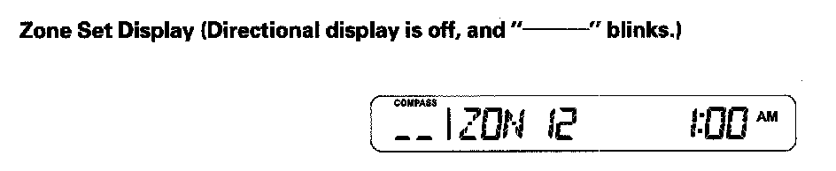
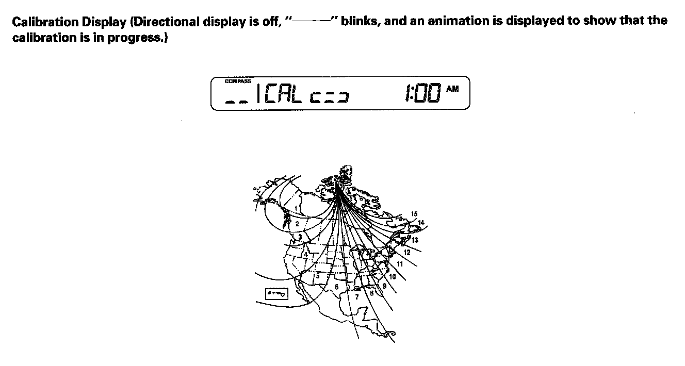

Compass: Description and Operation
Electrical CompassSystem Description
Compass Operation (Canada models, without navigation)
The electrical compass unit shows the direction of the vehicle on the center information display. Compass operation can be affected by driving near power lines or stations, across bridges, through tunnels, over railroad crossings, past large vehicles, or driving near large objects that can cause a magnetic disturbance. If you see "--------" in the direction display, the compass is self-calibrating.
The compass may need to be manually calibrated after exposure to a strong magnetic field. If the compass seems to be continually showing the wrong direction, and is not self-calibrating, complete the compass calibration procedure, given below. In most areas, there is a variation between magnetic north and true north. Zone setting is required so the compass can compensate for this variation. To check and select the zone set into the compass, complete the compass zone setting procedure given below:
Self-diagnosis Function
1. Press and hold the "SET" button, the "UP" arrow up button, and the "DOWN" arrow down button, then turn the ignition switch ON (II).
2. Release all buttons after a second.
3. Press and release the "SET" button and press and release the "v" arrow button. Do steps 1 through 3 within 4 seconds to enter the self-diagnosis mode.
4. Press the "A" arrow up button to make all segments go OFF and ON.
5. Press the "SET" button to exit the self-diagnosis function.
Compass Adjustment Mode menu
The compass calibration and the compass zone setting can be done in the compass adjustment mode. To enter the compass adjustment mode menu, press and hold the "SET" button for at least 5 seconds.
NOTE: If there is no operation of the "SET" button, the "A" arrow up button, or the "v" arrow down button during the compass adjustment mode for more than 10 seconds, the compass adjustment mode will cancel and the display will return to the normal display.
Compass Zone Setting
NOTE: You should do this procedure in an open area away from buildings, power line, and other vehicles.

6. Select the "ZON" and press the "SET" button on the center information display during the compass adjustment mode, the directional display on the center information display will show the "Zone set display" shown, and zone set request is transmitted.
- The display shows the "Zone set display" for 1.5 seconds and until the data from the Compass corresponds to the requested data. After 1.5 seconds and the received data corresponds, the display changes to the "CAL request display".
- The zone number displayed on the center information display during a compass adjustment mode will correspond with the last received Compass data. If zone data is not receive yet, display will be blinking "--------" for zone number.
Compass Calibration
NOTE: You should do this procedure in an open area away from buildings, power line, and other vehicles.

7. Select the "CAL" and press the "SET" button on the center information display during the compass adjustment mode, the directional display on the center information display will show the "Calibration display" shown, and calibration request is transmitted.
When the display goes from "--------" to an actual heading, the compass unit has been calibrated.